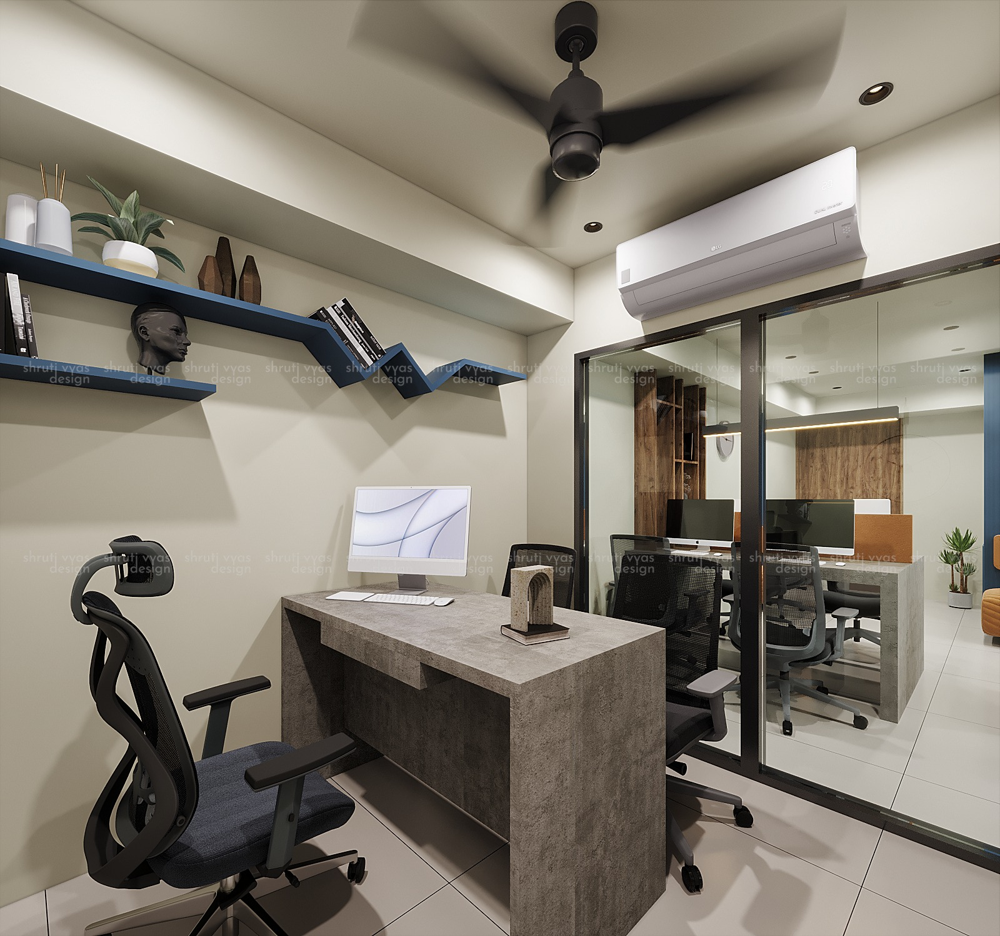
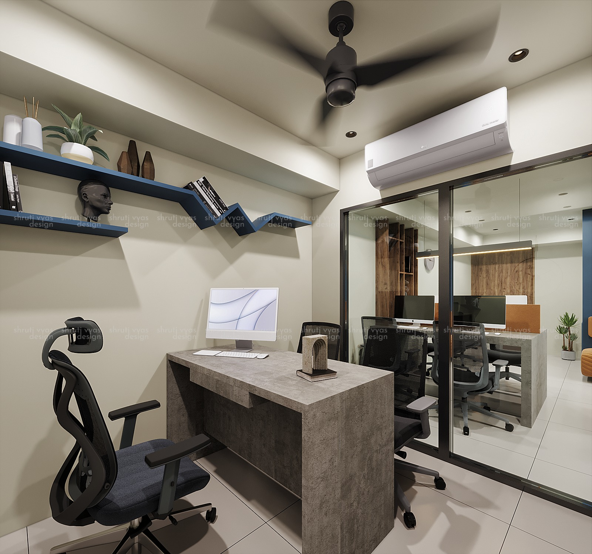
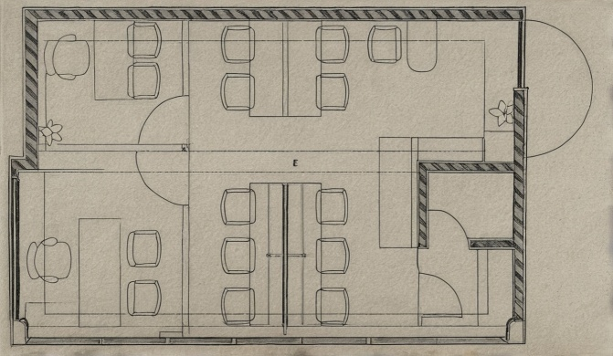
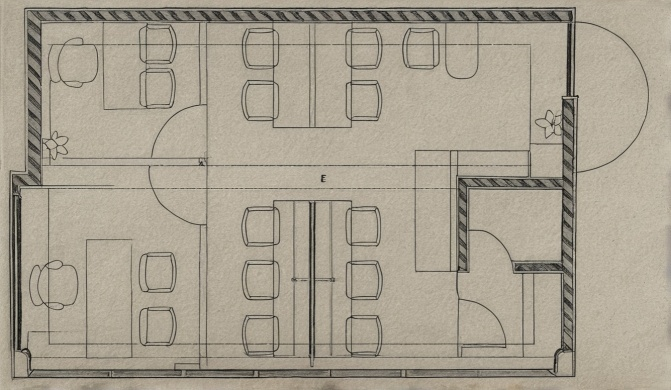

Workspace Design - 2
- To create a modern, functional, and stylish office environment that promotes productivity, collaboration, and comfort. Each space has a unique purpose, ensuring a cohesive yet distinct look throughout the office.
- A modern workspace with a striking blue accent wall, open workstations, and greenery. To create a vibrant and inspiring environment for focused work.
- A private office with a concrete desk, ergonomic chair, and minimalistic shelving.
- To provide a quiet and organized space for individual tasks. To offer a stylish and efficient workspace.A collaborative workspace with multiple computer stations, ergonomic chairs, and ample natural light.
- To facilitate teamwork and communication.An open office layout with modern workstations. To enhance productivity and provide flexible working spaces.
- A shared workspace with a long desk, individual computer stations, and overhead greenery.
- To promote collaboration and a connection with nature. Neutral tones with accents of blue and green to create a professional yet dynamic atmosphere.

 

 
